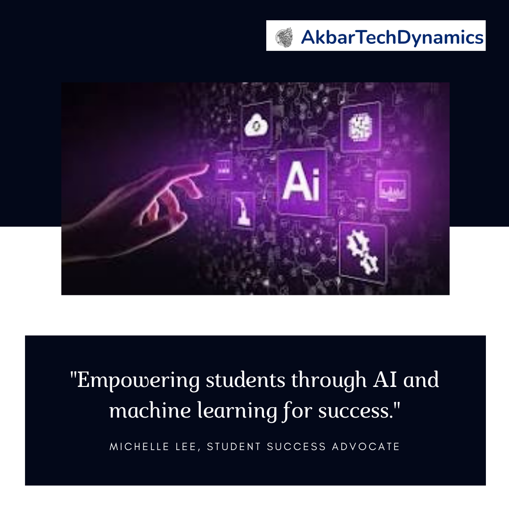

AI Isn't Just for Tech Giants. It's Here to Make Your Academic Journey Smoother.
Introduction
Artificial Intelligence (AI) and machine learning are often associated with tech giants and complex industries, but did you know they are also revolutionizing education? AI isn't just for tech giants. It's here to make your academic journey smoother. From personalized learning experiences to efficient project management, AI offers numerous benefits that can help students achieve their academic goals.
The Role of AI in Education
Transformative Power of AI
AI has the potential to transform every aspect of education. By automating routine tasks, providing personalized learning paths, and offering predictive insights, AI can significantly enhance the learning experience. For students, this means more efficient study practices, improved understanding of complex topics, and better academic outcomes.
Bridging the Gap Between Students and Success
AI bridges the gap between students and their academic success by offering tools and resources that are tailored to individual needs. Whether it's through intelligent tutoring systems, adaptive learning platforms, or AI-powered research assistants, these technologies ensure that every student has the support they need to thrive.
AI-Powered Tools for Student Success
Intelligent Tutoring Systems
Intelligent tutoring systems (ITS) use AI to provide personalized instruction and feedback to students. These systems adapt to the learning style and pace of each student, ensuring that they receive the right level of challenge and support.
Adaptive Learning Platforms
Adaptive learning platforms use machine learning algorithms to adjust the content and difficulty of lessons based on a student's performance. This ensures that students are always working at an optimal level, preventing boredom and frustration.
AI-Powered Research Assistants
AI-powered research assistants can help students with tasks such as literature reviews, data analysis, and citation management. By automating these time-consuming tasks, students can focus on the critical thinking and creativity required for their projects.
Enhancing Study Practices with AI
Personalized Learning Paths
AI can analyze a student's strengths and weaknesses to create a personalized learning path. This ensures that students spend more time on areas where they need improvement and less time on topics they have already mastered.
Efficient Time Management
AI tools can help students manage their time more effectively by providing reminders, setting study schedules, and prioritizing tasks. This reduces procrastination and ensures that students stay on track with their academic goals.
Interactive Learning Experiences
AI can create interactive and engaging learning experiences through simulations, virtual labs, and gamified learning modules. These experiences enhance understanding and retention of complex concepts.
AI in Project Management and Collaboration
Automated Project Planning
AI can assist in project planning by automating the creation of timelines, task lists, and resource allocation. This ensures that projects are well-organized and deadlines are met.
Collaborative Tools
AI-powered collaborative tools enable students to work together seamlessly, regardless of their location. These tools offer real-time editing, feedback, and communication, making group projects more efficient and cohesive.
Predictive Analytics for Project Success
Predictive analytics can forecast potential challenges and success factors in projects. By analyzing historical data and current trends, AI can provide insights that help students anticipate and mitigate risks.
Real-World Applications of AI in Education
Case Study: Improved Learning Outcomes
A recent study demonstrated that students using AI-powered tutoring systems achieved significantly higher test scores compared to those using traditional methods. The personalized feedback and adaptive learning paths provided by AI contributed to this improvement.
Case Study: Enhanced Research Efficiency
Graduate students at a leading university utilized AI-powered research assistants to streamline their literature reviews and data analysis. This allowed them to focus on developing innovative research questions and methodologies, resulting in high-quality publications.
Case Study: Successful Group Projects
Undergraduate students used AI-powered collaborative tools to manage a complex group project. The tools facilitated efficient communication, task management, and resource sharing, leading to a successful project submission.
Getting Started with AI in Your Academic Journey
Choosing the Right Tools
To make the most of AI in your academic journey, it's essential to choose the right tools. Look for platforms that offer personalized learning paths, adaptive content, and robust support features.
Integrating AI into Your Study Routine
Integrate AI tools into your daily study routine to maximize their benefits. Use AI-powered reminders and scheduling tools to manage your time, and take advantage of intelligent tutoring systems for difficult subjects.
Seeking Support and Training
Many educational institutions offer training and support for using AI tools. Take advantage of these resources to learn how to use the tools effectively and integrate them into your academic workflow.
Conclusion
AI isn't just for tech giants. It's here to make your academic journey smoother, offering personalized support, efficient project management, and enhanced learning experiences. Embrace the power of AI and machine learning to achieve your academic goals and unlock your full potential.